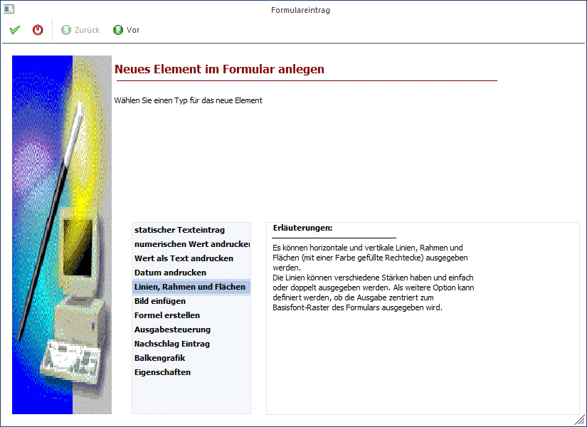
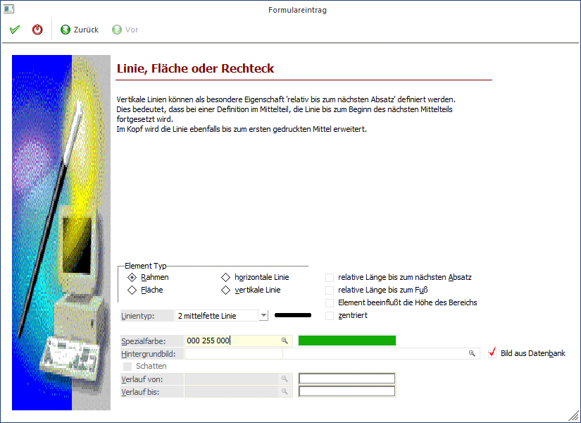
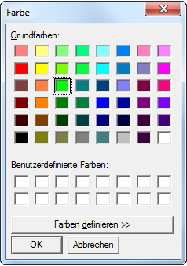

Mit dieser Option können grafische Elemente in das Formular eingebaut werden.
Schritt 1
Bei der Auswahl des neuen Elements wird die Option "Linien, Rahmen und Flächen" ausgewählt.

Durch Anklicken des VOR-Buttons gelangt man in das nächste Fenster, wo einige Einstellungen vorgenommen werden können:
Schritt 2

Ø Element Typ
Hier kann ausgewählt werden, welches grafische Element verwendet werden soll, wobei es folgende Unterscheidungen gibt:
ü Rahmen
Es wird ein Rahmen aus
Linien erzeugt, wobei der Hintergrund sichtbar bleibt.
ü Fläche
Es wird eine Fläche
erzeugt, die auch eine alternative Farbe haben kann. Diese Fläche kann auch als
Hintergrund für mehrere Elemente dienen.
ü horizontale Linie
Damit wird
eine waagrechte Linie erzeugt.
ü vertikale Linie
Damit wird eine
Senkrechte Linie erzeugt.
Ø relative Länge bis zum nächsten Absatz
Diese Checkbox wird nur dann benötigt, wenn eine vertikale Linie in einem Mittelteil eingebaut wird. Dadurch wird gesteuert, dass die Linie bis zum Beginn der nächsten Mittelteilszeile gedruckt wird. Anwendungsbeispiel: Wenn ein Multiline - Feld angedruckt wird (z.B. Textbaustein), kann nicht definiert werden, wie lange dieses Feld ist - daher wird die Option "relative Länge bis zum nächsten Absatz" gesetzt - die Linie wird so lange gedruckt, bis der Textbaustein zu Ende ist.
Ø relative Länge bis zum Fuß
Diese Checkbox wird dann benötigt, wenn eine vertikale Linie im Kopfteil eingebaut wird und bis zum Fußteil reichen soll.
Ø Element beeinflusst die Höhe des Bereichs
Wenn diese Option gesetzt ist, werden die Linien 1 Zeile weiter berechnet und schließen somit an die nächste Mittelteilszeile bzw. den Fußteil an. D.h. die vertikalen Linien müssen nicht länger als notwendig definiert werden.
Ø Linientyp
Aus der Auswahllistbox kann die Art der Linie ausgewählt werden. Im Feld neben der Auswahllistbox wird der ausgewählte Linientyp angezeigt - damit ist ersichtlich, wie die Linie aussieht.
Ø zentriert
Wird diese Option aktiviert, beginnt die Linie im Zentrum der definierten Spalte. Ist diese Option deaktiviert, wird die Linie über die gesamte Spalte dargestellt und gedruckt.
Ø Spezialfarbe
Durch Drücken der F9-Taste wird ein Fenster geöffnet, aus dem dann eine gewünschte Farbe ausgewählt werden kann. Dabei können auch Farben selbst zusammengestellt werden.

Nach der Auswahl einer Farbe wird eine neunstellige Zahl in das Eingabefeld übernommen.
Ø Hintergrundbild
Für Rahmen und Flächen kann hier ein Hintergrundbild festgelegt werden. Über den Matchcode kann nach Bildern gesucht werden.
Ist die Checkbox
Ø aus Datenbank
aktiviert, werden im Matchcode nur mehr Grafiken vorgeschlagen, die sich in er Datenbank befinden.
Ø Schatten
Wenn es sich um eine Fläche handelt, kann mit der Option "Schatten" auch ein Schatten angezeigt werden. Der Schatten wird rechts unten dargestellt.
Ø Verlauf von - Verlauf bis
Bei Flächen kann auch ein Farbverlauf hinterlegt werden. Durch einen Doppelklick auf das jeweilige Feld kann die gewünschte Farbe ausgesucht und übernommen werden.
Ø Winkel
Über die Auswahllistbox "Winkel" kann gesteuert werden, in welche Richtung der Farbverlauf dargestellt werden soll.
Beispiel für 0 Grad: 
Beispiel für 135 Grad:
Durch Anklicken des ZURÜCK-Buttons kann nochmals der Typ verändert werden. Durch Drücken der F5-Taste wird der Eintrag in das Formular übernommen. Durch Drücken der ESC-Taste wird das Fenster geschlossen.